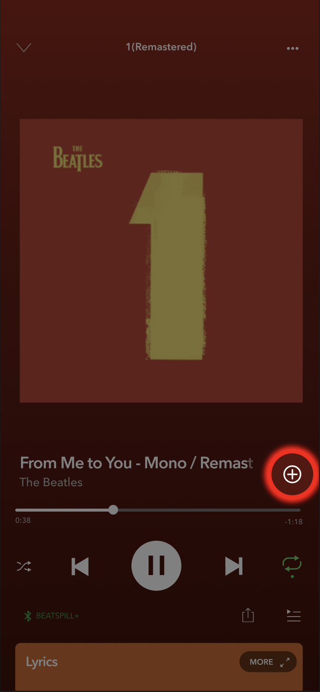
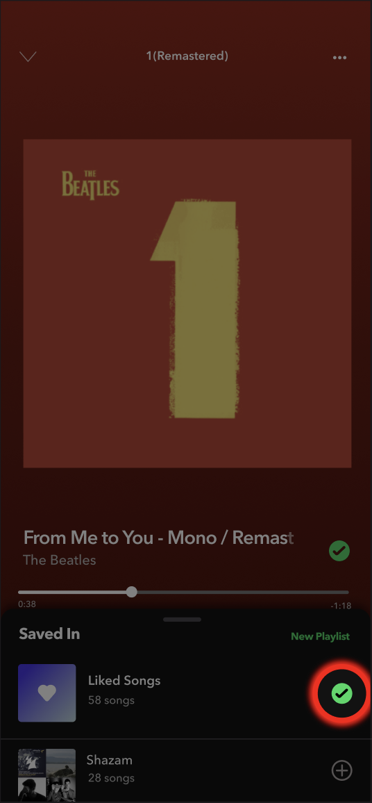
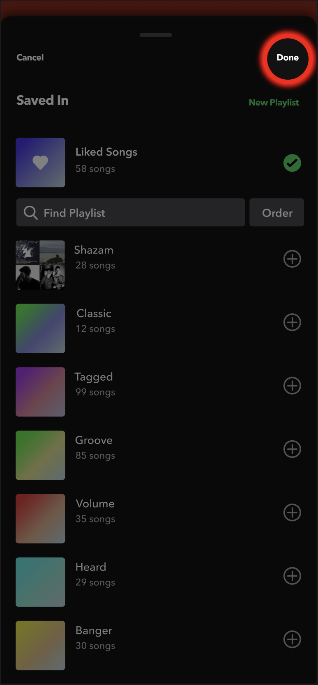

Spotify · Build Mode
May 2026
Problem
- Adding a song to a playlist is a multi-tap chore — tap the plus, pull it out of Liked Songs, find the right playlist, confirm; or dig through the "⋯" menu for "Add to playlist." Every track is a detour.
- It breaks down most when you have the least attention to spare. In the car or on the go, a song you'd love to save slips by, because capturing it means stopping to tap through menus.
- Discovery feels stale — recommendations keep looping back to songs you've already turned down, so even finding a track worth adding is harder than it should be.
- There's no way to build a playlist as effortlessly as it is to think "I want to add this song."



Proposed Solution — Build Mode
- One-tap building. Enter Build Mode on any playlist and Spotify feeds you songs one at a time, already playing. For each one you do exactly one thing: Add or Skip.
- You pick the source. Songs you already know (pulled from your other playlists), songs you don't (pure discovery), or a mix of both — and the picks adapt as you go.
- Hands-free. Add and Skip are big, equal targets and the whole flow is voice-controlled — grow a playlist from the car without looking at your phone.